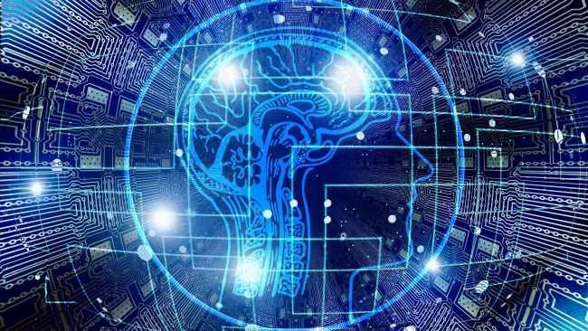

Artificial intelligence and future
Links:
- artificial intelligence
- artificial intelligence domains
- Challenges of artificial intelligence
- artificial intelligence importance
AI will create jobs:

While the relationship between artificial intelligence and jobs is a matter hot debate, it is still safe to say that AI will indeed offer new opportunities. According to the World Economic Forum report, robots and AI will create as many AI jobs as they displace. This conclusion is entirely viable as it is easy to identify some of the many careers in artificial intelligence, for example, data scientists, who evaluate the decisions made by AI algorithms to eliminate any biases. Apart from that, some other AI occupations include:
Transparency analysts: people tasked with classifying the various types of opacity for algorithms.
Smart-system interaction modelers: experts who develop machine behaviour based on employee behaviour.
Machine-relations managers: people who champion for the greater use of algorithms that perform well.
As far as the competition for jobs between humans and robots goes, worth noting is that there are jobs that AI can't replace. Roles that require leadership, empathy, and delegation are examples of the many jobs that are safe from automation.
AI will eliminate bias and diversity challenges at work:
Automation will stir positive change in the workplace. When AI is used during recruitment or even performance management, all workers will be evaluated in an unbiased, fact-based manner. In turn, Human Resources managers can get to concentrate on other essential strategic undertakings that ensure balance in the workplace.
AI can help HR departments to use machine learning (ML) in discovering where issues such as bias stem from and assist them to act accordingly faster. ML shines in identifying instances of bias. In turn, this will promote fairness and diversity in the work setting.